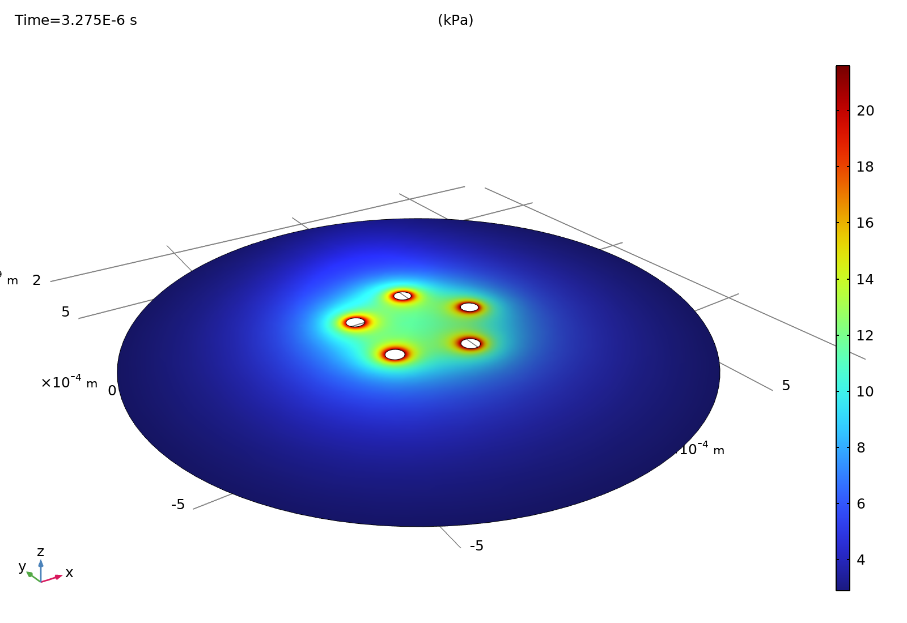
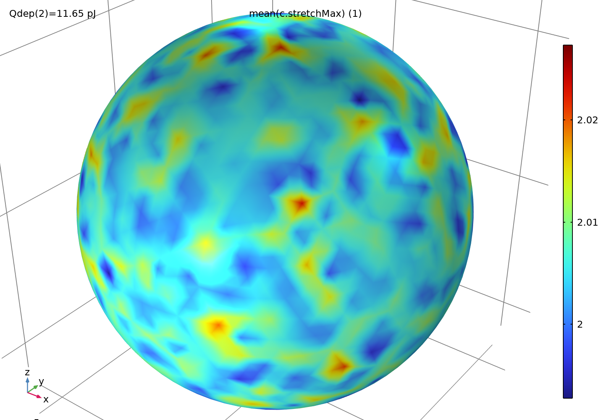

Continue after J01–J04 and L01. Start with the first blank-model benchmark. The M1 → M2 → M3 → M4 route now has 328 numbered GUI steps: where to click, exact field values, expected observations, troubleshooting and save points. Build the 0D benchmarks before the two 3D models.
在 J01—J04 和 L01 之后继续。先从首个空白模型基准开始。M1 → M2 → M3 → M4 共 328 个编号界面步骤：点击位置、精确字段、预期观察、排错及存档点。先建立零维基准，再建立两套三维模型。
First-time COMSOL interface guide · Worked derivations, symbol definitions and checks · Editable LaTeX source
初次使用 COMSOL 的界面基础 · 完整推导、符号定义与核查 · 可编辑 LaTeX 源文件
Both models were built, solved and independently reviewed in COMSOL 6.4. The strongest sampled gas-reference finer-time control gives 89.61 kPa at the declared 0.5 mm, 1 MHz receiver. Two low-energy gel equilibria pass the selected stretch proxy.
两套模型均在 COMSOL 6.4 中完成构建、求解和独立核查。最强气体参考样本的细时间步对照，在声明的 0.5 mm、1 MHz 接收器处给出 89.61 kPa。两组低能量凝胶平衡状态通过所选伸长代理判据。
These are conditional pressure and equilibrium theories. The uniform-population physical closure is rejected; actual laser activation, jet speed, fracture and repeatable device compatibility remain unresolved. Prepared lessons do not establish learner mastery.
这些结论属于有条件压力与平衡理论。均匀泡群的物理闭合被否决；实际激光激活、射流速度、断裂与器件可重复兼容性尚未解决。课程备妥不代表学习者已经掌握。
Blank-model recipe and exact imports · Scientific report · Signed independent review
空白模型配置与精确导入项 · 科学报告 · 已签署独立核查


Figures are native COMSOL exports. Rebuild sources and numerical evidence are included; saved MPH files and original source PDFs are supplied in the local modeling delivery. Public paper links use original citations.
配图是 COMSOL 原生导出。此处包含重建源代码与数值证据；已保存 MPH 文件和原始文献 PDF 位于本地建模交付包。公开文献链接指向原始引文。